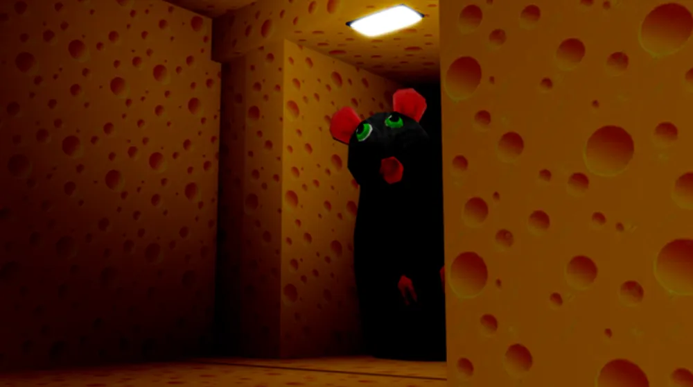

Cheese Scape

Cheese scape é um jogo do estilo de backroom,
que parece um quarto infinito, mas no cheese scape
você precisa fugir de um rato dentro desse quarto sem saída.
Página anterior
Próxima página
Voltar para a página principal